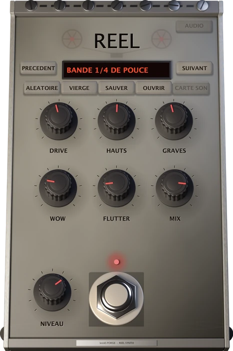

Le catalogue
Les 7 plug-ins : filtres et distorsions
 CRUNCHOverdrive à diodesFiltres et distorsions
CRUNCHOverdrive à diodesFiltres et distorsions FERALOscillateur commandé par le signalFiltres et distorsions
FERALOscillateur commandé par le signalFiltres et distorsions MANGLEDestruction · crush, fuzz, porteFiltres et distorsions
MANGLEDestruction · crush, fuzz, porteFiltres et distorsions
REELSaturation de bande magnétiqueFiltres et distorsions SLUICEFiltre passe-bas à échelle, à enveloppeFiltres et distorsions
SLUICEFiltre passe-bas à échelle, à enveloppeFiltres et distorsions TWISTReplieur d'ondeFiltres et distorsions
TWISTReplieur d'ondeFiltres et distorsions WARMTHSaturation douce · tube, transformateur, bandeFiltres et distorsions
WARMTHSaturation douce · tube, transformateur, bandeFiltres et distorsions